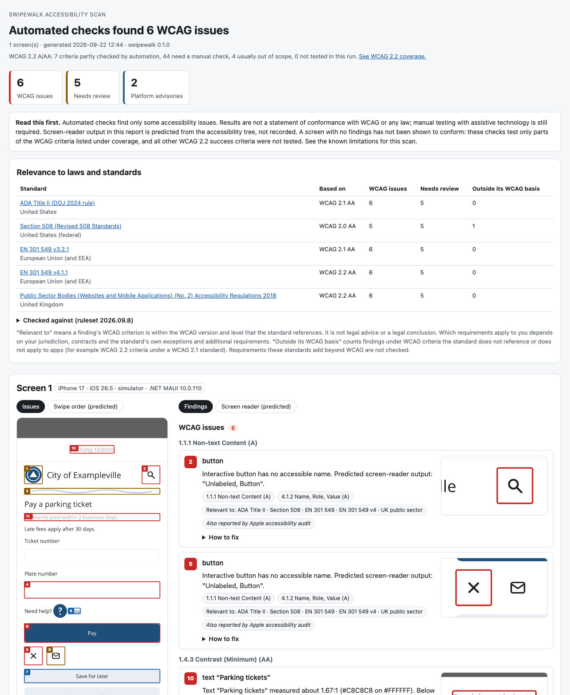

Swipewalk reads a running app through the platform's accessibility layer, the same layer screen readers use. It checks what users actually get: rendered text contrast, touch target sizes, missing or misleading names, and text that breaks at large text sizes. Each finding is mapped to WCAG 2.2 success criteria, and the report shows the order and wording a screen reader would likely announce (predicted, not recorded).
Not a compliance verdict. Automated checks find only some accessibility issues. A report with no findings doesn't show that an app meets WCAG or any law; manual testing with assistive technology is still required.
Use a test device. On a physical phone, the large-text check temporarily changes the phone's text size and restores it afterwards. If a run is interrupted, the next run or
swipewalk doctor tries to restore it, and says how to change it back by hand if it can't. Avoid running the large-text check on a phone someone relies on every day.
Install
Needs the .NET 10 SDK on macOS, plus Android platform-tools (for Android) or Xcode (for iOS).
dotnet tool install -g Swipewalk
swipewalk doctor --platform android
swipewalk scan --platform android --large-text --out reportOr download the Mac app (signed and notarized, macOS 12 or later) from the releases page: it runs the same scans in a window, with a device list, live progress, the report and a comparison with earlier runs.
What a report looks like

What it does
- Scans one screen, or scans each new screen while you use the app; it can also rescan each at a large text size (Android and iOS, including physical phones, where it changes the phone's text size and restores it afterwards -- on an iPhone through the Settings app; use a test device). Screens that weren't scanned are listed as a manual task.
- Measures text contrast from screenshot pixels, not from source code.
- Keeps WCAG issues apart from platform guidelines (Apple 44 pt, Android 48 dp touch targets).
- Labels findings with the standards they are relevant to: ADA Title II, Section 508, EN 301 549, UK public sector regulations. This is not legal advice.
- Compares runs: new, still found, and no longer found.
- Includes Apple's own accessibility audit on iOS and Google's Accessibility Test Framework on Android.
- On Android, can also drive TalkBack itself over a screen's elements (opt-in) and report differences from the predicted transcript for you to check, running locally with no cloud service.